The History of the Tigers Uniform
The History of the Tigers Uniform
Jaffna Monitor hellojaffnamonitor@gmail.com 35 In 1981, in Madurai, Tamil Nadu, the first uniform of the Liberation Tigers was designed by Nataraj Master. Nataraj Master also created the emblem of the Liberation Tigers. During this period, the Tigers lacked the resources to design and sew a unique uniform. LTTE supremo Prabhakaran devised an idea. He directed Nataraj Master to modify a Tamil Nadu police khaki uniform purchased from a shop in Madurai by painting stripes with a small brush using oil paint. Prabhakaran aimed for the uniform to mimic the stripes of a tiger's skin; thus, the first uniform of the Tigers was created. Wearing this uniform, Prabhakaran took a photograph while holding an SMG gun, which had been snatched from Police Officer Bastiampillai after killing him at Maduppannai on April 7, 1978. This was the first photo of Prabhakaran taken in uniform. Lieutenant Seelan, also known as Charles Anthony, was also photographed wearing the same uniform. These photos were taken by Nataraj Master at his home. The History of the Tigers Uniform By: K.S. Lakshmi Prabhakaran in 1981, wearing the first-ever uniform of the Liberation Tigers, designed by Nataraj Master. This iconic photo was captured in Madurai on the first floor of Nataraj Master's house, with a saree belonging to Nataraj Master's wife serving as the backdrop Prabhakaran wearing a foreign military uniform, a gift from a friend in London who visited him in Chennai during the 1983-84 period. Opinion
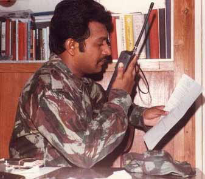
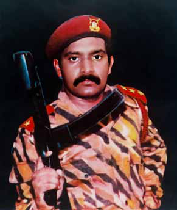
Jaffna Monitor hellojaffnamonitor@gmail.com 36 After the ethnic riots in July 1983, the Indian government began assisting Tamil militant organizations. Consequently, the Tigers started using Tamil Nadu as a base for their operations. During this time, they donned uniforms similar to those of the Indian Army, which were purchased in Chennai. These uniforms were also worn during the conflict with the Indian Army in 1987. This led to some unique incidents, as both the Tigers and the Indian Army, clad in identical uniforms, clashed. In close combat, it became difficult to distinguish friend from foe, creating confusion. To mitigate this, Prabhakaran implemented a change. He instructed that black cloth be added to the calf and forearm sections of the uniforms worn by the Tigers, aiding in identifying their fighters during battles. Prabhakaran at the Punithabhoomi Base in Nittikaikkulam, Mullaitivu, in the late 1980s. Pictured wearing an Indian army uniform, uniquely modified with black cloth added to the calf and forearm sections Kiddu, the then Jaffna region commander of the LTTE, pictured with his fighters in 1986 in Jaffna. Due to the urban setting of their operations, Kiddu did not prioritize uniforms, resulting in the fighters wearing shorts provided by the LTTE.
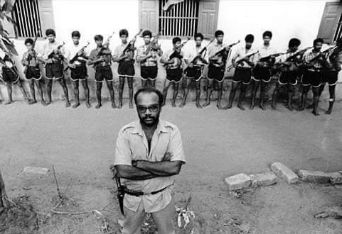
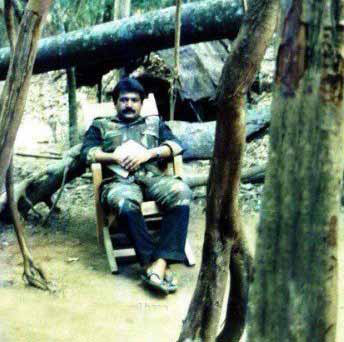
Jaffna Monitor hellojaffnamonitor@gmail.com 37 In 1989, negotiations started between the Tigers and the Premadasa government. After this, there was a decrease in Indian Army operations, and an unofficial ceasefire was observed from October 1989. During this period, Prabhakaran fully realized his uniform project. In the Erode region of Tamil Nadu, a stronghold of Tiger supporters, fabric for the uniforms was procured. These fabrics were then transported by boat to Sri Lanka and delivered to a camp in the Niththikaikulam forest, where uniforms for the Tigers were produced. Numerous tailors from Jaffna and Chavakachcheri were coerced into making these uniforms in the forest. A Tiger member named Ajith, who now resides in England, was responsible for this stitching unit. Following the withdrawal of the Indian Army from the northern and eastern parts of Sri Lanka in 1990, the Tigers' commander in the Batticaloa and Ampara districts, Karuna Amman, commissioned local weavers in Batticaloa to produce the uniforms. Later, uniforms made abroad by the Tigers' international representative, Kumaran Pathmanathan, also known as KP, were utilized by the Tigers few a times only. In 1996, after relocating to the Vanni region, the Tigers adopted distinct uniforms for each of their divisions - land, naval, air, and black tiger forces - each distinguishable only by color. Separate uniforms were also used by the Tigers' police and border forces. In 1983, the LTTE's first book, titled 'State Terrorism and Armed Revolution,' featured Prabhakaran's first photo in uniform. In this photo, he is seen wearing the Tigers' initial uniform. Prabhakaran's final photograph, taken when he lay dead in Nandikadal on May 18, 2009, also shows him wearing the Tigers' uniform. Prabhakaran in Chennai (1983-84), donning a foreign military uniform gifted by a friend from London, while his fighters appear in civilian attire
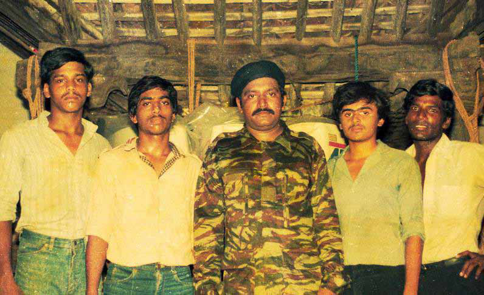
Jaffna Monitor hellojaffnamonitor@gmail.com 38 Translated from the original Tamil short story kapṭaṉ (fg;ld;) by Shobasakthi. The original story is available at his website www.shobasakthi.com Translated by: eḻuttukkiṉiyavaṉ (vOj;Jf;fpdpatd;) Story W hen sunlight pinched him, he jumped up in alarm. A tall temple tower was visible at a distance. He congratulated himself for sailing all the way to India all alone with a vēṭṭi for a sail. He noticed that the boat was moving neither forward nor backwards but was circling in place. He raised his hand and realized that the sea was completely still with no sign of a wind. When he tried to push the boat forward with a quant pole, the pole touched the ground. He was excited. But the boat refused to budge. When he finally made up his mind to jump into the water and swim ashore, he noticed two boats zipping towards him at high speed. As the boats approached, Poṉrāsā began to whistle enthusiastically, Captain PART 02
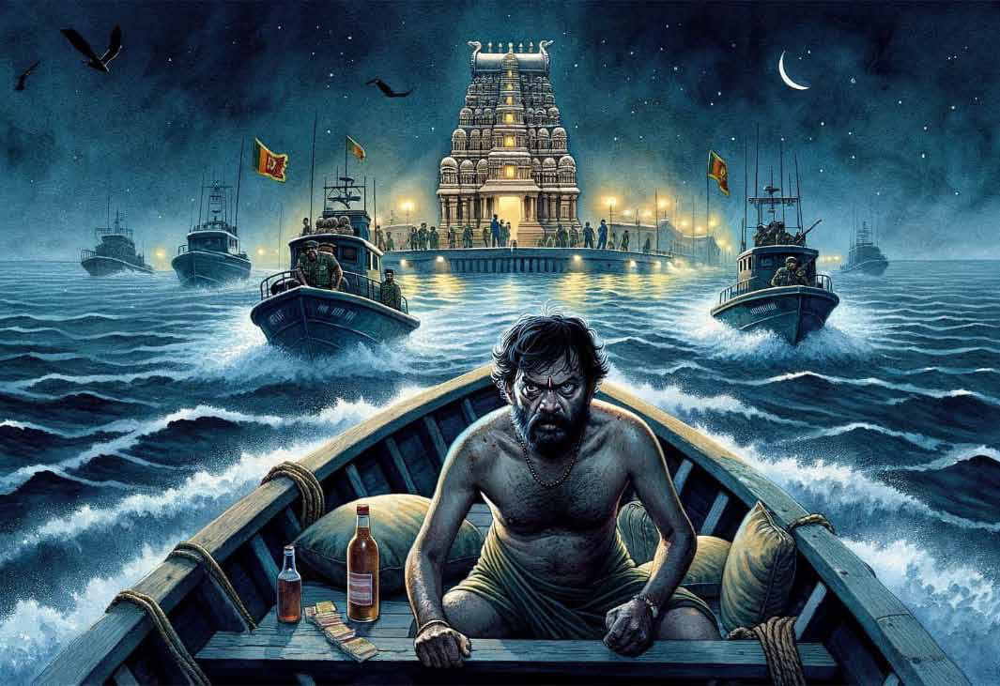
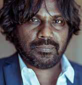
Jaffna Monitor hellojaffnamonitor@gmail.com 39 thinking ‘Indian navy.’ He was relieved, imagining that the navy itself would give him a ride towards Rāmēswaram. When the navy boats surrounded Poṉrāsā’s, he adjusted his vēṭṭi, buttoned his shirt all the way up to the neck, unrolled his sleeves to their full length, and wore a cultivated look and the expression of a refugee. He brought his hands together above his head in greeting and said “vaṇakkam sir.” The four sailors who jumped into his boat started beating him up without uttering a word. “Sir, I am Tamil,” Poṉrāsā pleaded. The beatings did not stop. His lip cracked open, and a crimson streak of blood ran down his white shirt. Only when they hauled Poṉrāsā into their boat, towed his, and sped towards the shore did he realize that the temple tower at the distance did not belong to the Rameswaram temple, but to the Naiṉātīvu Nāgabhūshaṇi Ambāḷ temple. He was disgusted to realize that, after embarking from Vēlaṉai and sailing through the night, he had only reached the island just next to Vēlaṉai, Naiṉātīvu. Naiṉātīvu was a fortified base of the Sri Lankan navy. A vessel could leave or arrive at Naiṉātīvu only with the express permission of the navy. At that time some four thousand people lived in Naiṉātīvu. Not even a speck of dust could stir in that island without the navy’s knowledge. Poṉrāsā’s boat had shattered and breached such an iron fortress. Poṉrāsā was stark naked, tied to a flagpole in front of a sub-commander’s office. He was halfway up the pole. Surely the sailors would have felt a tinge of envy when they regarded Poṉrāsā’s burly arms and legs, his broad shoulders, and strong chest. Droplets of blood kept blossoming like tiny little ruby gems throughout his coal black body. The two blue- gem ear studs from his underwear were now inside the drawer of the sub-commander’s desk. The navy was busy trying to piece together what kind of Tiger they had netted. What confused them was that this Tiger was over fifty years old. Even Pirapākaraṉ, the supreme leader of Tigers, was just 36 then. As the sun scorched, Poṉrāsā was crying out loud. He pleaded in all three languages: Tamil, Sinhala, and English. His heart said, “I will survive this calamity.” But if he relaxed, he was afraid that the navy might shoot him and throw his body into the sea. So, he kept up his theater of screaming and begging for water without any let up. When he shuddered, pleading for water, he was fed seawater. Poṉrāsā had indeed made a mistake. As soon as he was caught, he could have admitted to the truth – that he was on a clueless drunken pursuit of his sons who had fled to India. But he thought that admitting he was sailing to India might lead to bigger difficulties. So, he had claimed that he was out fishing but was blown off course. But the sailors only needed a couple of questions to conclude that he knew nothing about the sea, and that he was on a stolen boat. For two days, he languished on the flagpole without food or water. On the third day, he was locked up in a room. There was plenty of creepy crawly traffic in the room. When the sun set, it was hell for Poṉrāsā. Drunken sailors would drag him out of the room and, in the name of an inquiry, would ask outrageously silly questions. Poṉrāsā would respond with even more outrageous answers. He would draw a map to explain to them where Tiger camps lay, where the Tiger leader probably was, and where Soosai, the leader of Sea Tigers, might have been at that moment. The next day, the sailors would ask him to draw the same map. He would draw a map that was in complete contrast to the previous day’s map. Pirapākaraṉ’s camp that was in Point Pedro the previous day would have now magically transported itself to
Jaffna Monitor hellojaffnamonitor@gmail.com 40 Chāvakachchēri. The sailors beat Poṉrāsā with coconut tree petioles, rope, and thick poles. Within a week, Poṉrāsā’s skin had peeled off from half of his body. After a week, the beatings subsided. The sailors now understood very clearly that they had caught a petty thief and not a Tiger. Poṉrāsā had also become adept at giving the navy what it wanted. He was an excellent cook. He cooked tasty meals for the commanders and gained their sympathy. Eventually he had morphed into a sort of pet for the navy. They let him go out into the village. He roamed around the village all day and returned to the navy camp to sleep in his room. He had cleaned out his room and fashioned a bed for him out of wooden planks. The villagers called him ‘navy aiyā.’ They were afraid of him because of his navy connection. Palmyra toddy and fish were plentiful in Naiṉātīvu, Since there was no prospect of escaping the island without the navy’s consent, Poṉrāsā thought no more about escape. He stopped blaming his sons who had fled to India. Perhaps he realized what would have been in store for them had the youngsters been caught by the same people who had caught him, an old man, and had treated him like a goat waiting to be skinned. Occasionally he went to the navy camp. But otherwise, he stayed in the temple hall. After all, this was the island that gave Maṇimēkalai, the heroine of the eponymous Tamil epic, the magical bottomless vessel
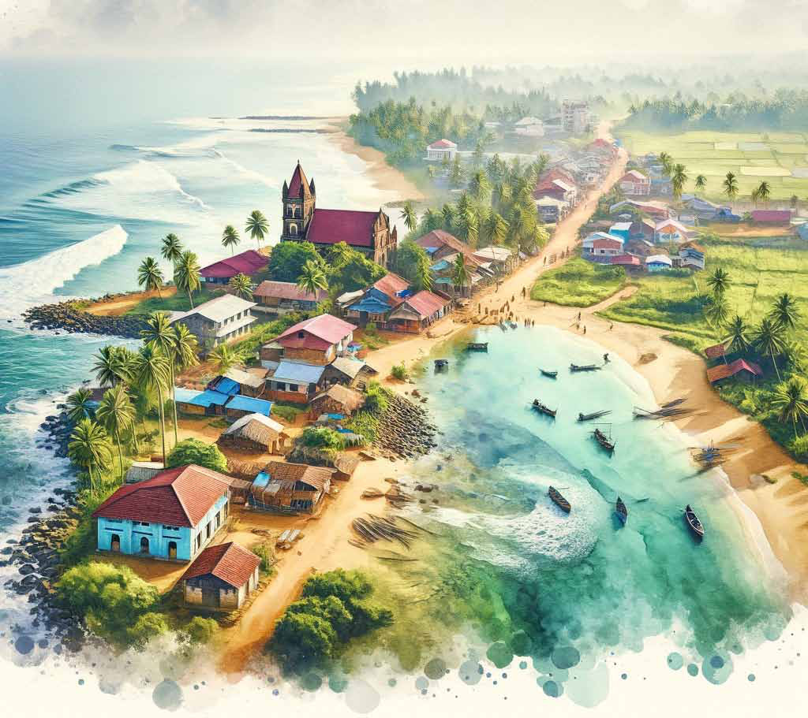
Jaffna Monitor hellojaffnamonitor@gmail.com 41 amudhasurabi, from which one could keep drawing rice without end. Poṉrāsā would never run out of rice either! With the temple rice, the almsgiving hall of the temple, and the butter and jam from the navy camp, he put on some weight. In the mornings, after a thorough and intense checking by the navy, a motorboat left Naiṉātīvu to Puṅgudutīvu Kuṟikaṭṭuvāṉ port. The navy permitted people to board that boat only if they had some absolutely essential business that required travel. Poṉrāsā sent a letter to his wife through one such passenger. For three months Gñaṉammā was mourning her husband, not knowing whether he was alive or dead. When the letter arrived in her hands, she was totally confused. The letter had said that ‘the civil administration in Naiṉātīvu is excellent. As soon as you receive this letter, come to Naiṉātīvu. The navy is very supportive of me.’ When Gñaṉammā showed the letter to to a neighbor, he had advised her to take it to Tigers because he suspected that the letter contained a trap. This is how the letter ended up in the Tiger office.
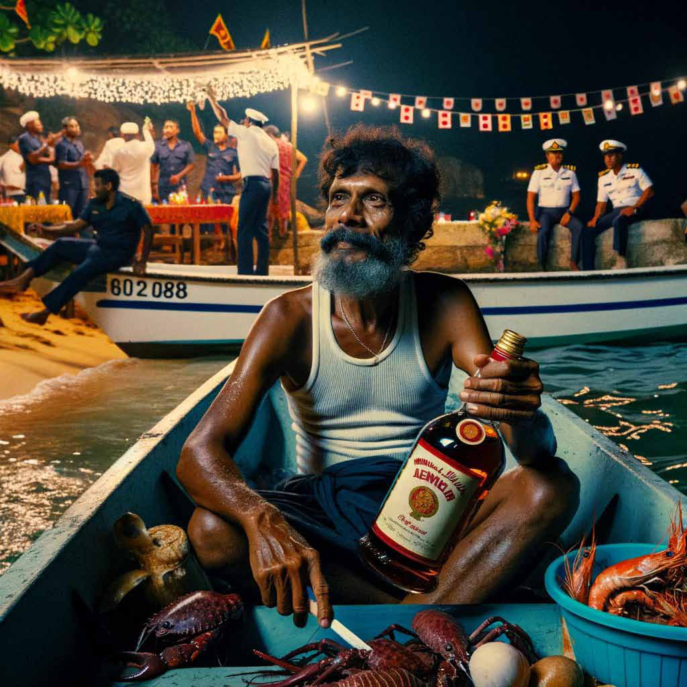
Jaffna Monitor hellojaffnamonitor@gmail.com 42 The New Year celebration in the navy camp was raucous. That day Poṉrāsā had made a special seafood feast with cuttlefish, prawns, and crabs, making the commanders very happy. The commanders gifted him a full bottle of Mendis arrack. He sat on the beach, enjoying it little by little. The cold December wind made him shiver. From the south, he saw a skyrocket from Puṅgudutīvu shoot up and burst into a colorful bouquet. When half of the arrack bottle was empty, he felt a certain virility in his body, He grabbed the bottle and started walking towards the camp. Sinhala bailā songs blared forth from the camp. He thought to himself that if the Tigers attacked at that moment, the camp would fall very easily. His feet dragged him towards the village. All the houses were submerged in darkness. On festive days like these, it was common for drunken sailors to enter the houses in the village to harass women. He knew that therefore the village folk were extra careful on such days. His mind wandered into erotic thoughts. He emptied the bottle into his mouth. The bottle was still a quarter full. He returned to the beach, put the bottle on the ground, stripped down and walked into the water until it was waist high. Then he closed his eyes and started to masturbate. After a few minutes, with weariness and disgust, he walked back to the shore and dressed himself. When he lifted the arrack bottle and opened it, he felt a heavy blow on his neck. He swirled around like an angry wounded animal. Before his brain had had time to judge the situation and act accordingly, he heard the bottle in his hand crash into the head of his assailant and break into pieces. The next morning some sailors tied a stone to his neck and took him out to sea on a boat. The bandaged sailor who was attacked by him the previous night could not take his eyes off of Poṉrāsā. He remained quiet. They then tied him to a long rope and lowered him and the stone into the sea. He fell into the womb of Mother Sea. He flapped his arms and legs like a baby. He felt gravel stones pressing into his belly. He could feel that his head was about to explode. A fog of darkness began to pervade his brain. Then the sailors pulled him up with the rope. He was three quarters dead when he surfaced. After this game was repeated a few times, they hauled him back into the boat. The passenger boat from Naiṉātīvu port to Kuṟikaṭṭuvāṉ was coming towards them at a distance. The navy maneuvered their boat abreast the passenger boat to transfer Poṉrāsā to the passenger boat. The sub commander thrust a small package into his hands. It had the two ear studs with blue gems. The commander said to Poṉrāsā in Sinhala: “Now Poṉrāsā knows what death is.” Poṉrāsā put the ear studs into his pocket. As soon as they reached Kuṟikaṭṭuvāṉ, he hurried over to the waiting minibus. Within a couple of minutes, a voice was heard to call out “aiyā, please climb down from the bus.” Tigers were waiting outside the bus. When he got off, he was blindfolded using a piece of black cloth. There were about two hundred prisoners in the Tiger prison. None of them knew where exactly the prison was. No one interrogated Poṉrāsā. The blue-gem ear studs were taken from him as soon as he was arrested. He was given a prison uniform. The uniform was just half a sarong. There were no other clothes. Undergarments were prohibited. His feet were bound to a chain with three iron balls. Tigers already had all the information about Poṉrāsā. The owner of the boat he stole had filed a complaint with Tigers. They also had the letter he sent to his wife from Naiṉātīvu. Because he had left on a boat all alone, Tigers in the prison camp called him ‘captain.’ All they asked for was just one thing: “Captain, tell us the truth.”
Jaffna Monitor
hellojaffnamonitor@gmail.com
43
Poṉrāsā told them everything: truths and
fabrications. They listened patiently and
recorded his statement on a large register.
Then they asked again, “Captain, tell us the
truth.” Poṉrāsā was never angry when the
navy beat him. But when Tigers beat him, he
couldn’t control his anger. When they beat
him, he closed his eyes tightly shut. His blood
boiled, thinking ‘look at these weaklings,
they look like number three sewing machine
spindles, but dare lay their hands on a well-
built body like mine.’ When he drew a map
of the Naiṉātīvu navy base, Tigers were truly
astounded.
Staring at the map that Poṉrāsā had drawn,
the man-in-charge barked an order to the
man standing next to him, “bring that civil
engineer here.” A while later a young man
whose hands and legs were in chains was
dragged there on his knees, like a dog. The
man-in-charge showed Poṉrāsā’s map to him
and said, “You call yourself a civil engineer?
Look at this map Captain had drawn. Even
after six months, you couldn’t draw a map
of the Park Camp properly.” He then turned
to Poṉrāsā and gave him a spade handle.
“Captain, beat him with this. Let us see if
that makes him recall what he had studied.”
Poṉrāsā took the spade handle without any
hesitation. The first blow landed on the young
man’s back. Poṉrāsā growled in a loud voice
as he beat the young man, “dēy, traitor. It is
because of people like you that we haven’t
yet gotten Tamil Eelam. These children are
giving everything, including their lives, to
the battle. But you betray them. Have you
ever bothered to think about the hardships of
the Tamil people?” The young man’s body
just trembled, but he didn’t even moan in
response. When Poṉrāsā tried to leap over
to beat the young man again, he tripped over
his own foot chain and fell face first over
the young man’s body. He knew absolutely
nothing about the young man.
In the Tiger prison, food was served only
twice a day. They added a little sugar into
white rice porridge. It was barely enough to
fill a quarter of one’s stomach. When they
apprehended him, Poṉrāsā had thought that
they would beat him a couple of times while
interrogating him and would then let him go.
He had never expected to endure months of
imprisonment, starvation, and torture. One
day, when he was again asked, “Captain,
tell us the truth,” his patience ran out and he
told them the truth with a little harshness:
“thambimār, I am like a father to you, it is
wrong for you to tie me up half-naked like an
animal. I gave you the map of the Naiṉātīvu
camp. Instead of attacking that camp, it is
completely unfair that you continue to torture
this old man. I have received enough beatings
from the navy. Tamils should not do this to
other Tamils.” The man-in-charge listened
silently. Then, after deep thought, he ordered
Poṉrāsā to be confined in a ‘karappu’.
You have doubtless seen a karappu before –
the portable chicken coop made from canes.
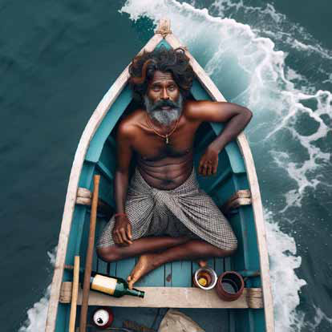
Jaffna Monitor hellojaffnamonitor@gmail.com 44 This karappu was a triangular-shaped barbed wire cage as tall as a grown man. They put Poṉrāsā in such a cage for three days. Apparently, the man-in-charge had grumbled, “Captain is talking politics.” One could not turn this way or the other inside that cage. If one did, the barbed wire would tear their skin. For three days, Poṉrāsā sat inside that cage without food or sleep. If he dozed off, the barbs tore into his skin and drew blood. He suffered as though he was wearing a shirt made of thorns. In three days, his entire body had deep gashes with skin and flesh hanging. Only his head was spared. Even amidst that unbearable torture, Poṉrāsā could not help thinking that a crown of thorns would have remedied that shortcoming. When the 1958 anti-Tamil riots happened, Poṉrāsā was exactly twenty years old. He was then working as a cook in a textile store called ‘Mariāmpiḷḷai & sons’ in a small town called Nittambuwa in Sinhala country. He went there when he was thirteen as kitchen help but had advanced to the position of cook. The owner of the store was from Karambaṉ. He loved Poṉrāsā’s cooking. Because Poṉrāsā had the reputation of being a troublemaker, he was never paid any salary directly. Whenever the owner went home to his village, he called Poṉrāsā’s father home and handed over the entire salary arrears to him. During those riots, ‘Mariāmpiḷḷai & sons’ was looted and burned. The owner, Mariāmpiḷḷai, was thrown alive into the bonfire. When the thugs came to grab Poṉrāsā, he lifted them as if they were rag dolls and flung them away. He then ran away to hide in the rambutān fields. The next morning when he saw military vehicles drive by, he ran to them. The army took him to a refugee camp. When the violence subsided, he went back to his village with just the clothes on his back and the towel he was given in the refugee camp. A new bunch of youngsters from his village were getting ready to go to the south to find employment. It was when Poṉrāsā, too, was getting ready to go back to Colombo to search for a new job, that his village priest arranged for him to get a job as the cook for Father Varapragāsam at the Jaffna Big Church. People called the Jaffna Big Church the pew church. That was the only church then that had any pews for the congregation to sit on. Hence the name. Father Varapragāsam loved Poṉrāsā’s cooking. Poṉrāsā was given a place to stay in the Father’s quarters. The priest
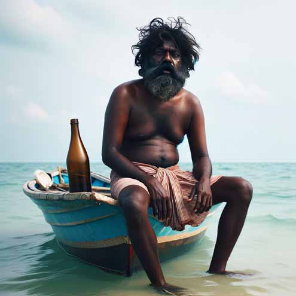
Jaffna Monitor hellojaffnamonitor@gmail.com 45 was born in Malaysia and had studied in Italy. His knowledge of Tamil was scant. At the Big Church, he was responsible for the Latin mass. He always spoke to Poṉrāsā in English. Poṉrāsā responded with his talent for cooking. Two years after he started working there, Poṉrāsā fell in love with Gñaṉammā who was a member of the Big Church’s Legion of Mary singing troupe. When a great opposition arose in Gñaṉammā’s family, Poṉrāsā absconded overnight with her to Suruvil by boat. On the third day after they had eloped, Father Varapragāsam and Gñaṉammā’s father came to Suruvil in search of them. Father Varapragāsam stood in front of Poṉrāsā’s house and yelled “Cook… Cook.” During the next morning service at the Big Church, crowns of thorns were placed on their heads. After that punishment, Father Varapragāsam himself performed their wedding. As a wedding gift to Gñaṉammā, the Father gave her ear studs with blue gems. The three-day barbed wire cage punishment had completely worn Poṉrāsā down. His body kept shivering ceaselessly. It started to deteriorate rapidly. Like a dead palmyra palm tree, he was rotting on the inside. He was lying down all the time. Every time he was called for interrogation, he dragged his chain unsteadily as he walked. Nowadays, whenever he was beaten up, he cried out aloud. He desperately wanted to see his wife at least once. But he did not tell that to Tigers. He could bear the barbed wire cage. If they threw him into the bunker prison, he thought he would go completely crazy within twenty- four hours. One evening, the leg chains of Poṉrāsā and six other prisoners were removed. They were all over fifty years old. Each was given a new sarong and shirt. Poṉrāsā thought they were about to be freed. They were blindfolded in black cloth. Overnight, the seven prisoners were moved to a prison camp in Jaffna city. After the rescue force evacuated the army forces trapped within Jaffna fort, the fort fell into the hands of Tigers who decided to demolish the four-hundred-year-old strong fort. A work gang from the prison camp where Poṉrāsā was being held, was taken to the fort already at six in the morning. They were given work incessantly until six in the evening. As the prisoners worked, a Tiger stood ten feet away with a cotton-wool beating rod in its hands. Prisoners were strictly forbidden to talk to one another. If a prisoner hesitated or faltered at work, he got a savage blow with the rod that singed the skin on his back. Like a mute, Poṉrāsā performed hard labor there in silence for three months, breaking stones from the fort wall, or carrying away sand and debris. On the evening when the task of demolishing the fort was completed, Poṉrāsā was released by Tigers. “Captain, at least from now on, be loyal to Tamil Eelam,” he was advised. Poṉrāsā was expecting that they would return his ear studs with blue gems. But there was no sign of their return. On hearing the word “release” Poṉrāsā had returned to his old self. He raised his voice slightly to respond to the Tiger who had offered him the advice about loyalty, “My two ear studs with blue gems are with you. Keep them as my contribution to the struggle,” and left. When she saw Poṉrāsā unexpectedly at night, Gñaṉammā was startled. The first question Poṉrāsā asked her was “did the army going to rescue the fort come to Suruvil?” When Gñaṉammā shook her head to say no, Poṉrāsā said, “That was exactly what I said back then, bitch. Your sons didn’t listen to me and fled to India,” and gave her a resounding slap on the cheek. The strength of the slap sent the blue-gem ear stud flying. It lay twinkling on the ground where it fell. Poṉrāsā bent down to
Jaffna Monitor hellojaffnamonitor@gmail.com 46 pick it up, asking “how did this come here?” Gñaṉammā said, “four months ago, the boys from the movement came to return them.” When Poṉrāsā went to lie down, Gñaṉammā lay next to him. She caressed his chest, put her head on it, and said “Christy and Bosco have gone to France from India. Hilda didn’t want her brothers to suffer. So she convinced her husband to call them to France within a month.” On the eighth of May, at Muḷḷivāykkāl, just prior to the last stages of the civil war, Poṉrāsā kept nagging Gñaṉammā, “we can no longer stay here, the army will reach here at any moment; let us walk over to the other side through the sea.” “No, the boys will not let the army reach here, it would be wiser to stay put,” said Gñaṉammā. “The army will do nothing to you because you are a woman, it is me they will kill,” said Poṉrāsā in a frustrated voice. He sat down on the beach sand, took Gñaṉammā’s hand, and with a shaking finger, drew a map on the sand. “There are sand fortifications here, landmines here, and Tigers are here, this is the way the army is going to break through,” he explained to Gñaṉammā. That night, when Gñaṉammā woke up startled by the sound of explosions, Poṉrāsā was not lying next to her. Gñaṉammā sat up, shaken. At around three in the morning, Poṉrāsā came back stealthily, like a cat, and sat next to Gñaṉammā. In a hushed voice, he pleaded, “there are a few boats on the beach; we can abscond to the other side in one, will you come?” “If we stayed put, we will be shot at by only one side, if you start some mischief, we may draw fire from both,” said Gñaṉammā. “If I die, you take responsibility, you whore, dāsi aparañji,” said Poṉrāsā through gritted teeth. Hilda, Christy, and Bosco were distraught, not having heard any news about their parents. One day there was a phone call from Vavuṉiyā. The message was that Poṉrāsā and Gñaṉammā were being held at a detention camp in Vavuṉiyā. The very next week, Hilda left Paris for Vavuṉiyā, She threw money around all over Vavuṉiyā, secured her parents’ release, and took them to Colombo with her. Within a month, she managed to get their sponsorship for immigration to France sorted out. Hilda boarded the plane to France with them. Hilda’s family was in Paris. Christy and Bosco had a small shop each in the town of Saint-Thibault in southern France. Christy went over to Paris to bring Poṉrāsā and Gñaṉammā back to Saint-Thibault. Saint-Thibault is a town of rivers. Christy had a house in the middle of the quiet woods by the banks of the river Thibault. The younger son Bosco’s beautiful house was a five-minute walk away. Their shops were close to each other by the highway. Poṉrāsā fell in love with that milieu. By the following summer, he had transformed completely. He was once again the Poṉrāsā who lifted the Sinhala thugs and flung them away. At ten in the morning, he would drink a peg of whisky and walk from Christy’s house to Bosco’s house to boss his daughter- in-law around. There, after downing another peg, he would return to Christy’s house for lunch and to boss around the other daughter- in-law. The grandchildren went absolutely quiet when they saw grandpa’s reddened eyes. Christy and Bosco were still a little afraid of their father. “Aiyā, you drink as much as you want, but refrain from making noise,” they pleaded. Gñaṉammā spent her time with the grandchildren. The children competed with one another to buy jewelry and clothing for their mother. The blue-gem ear studs from Father Varapragāsam lay abandoned in Gñaṉammā’s box.
Jaffna Monitor hellojaffnamonitor@gmail.com 47 Around midday one day, when Poṉrāsā was alone on the bank of the river Thibault, he saw that white boat. A french woman in her fifties was rowing the boat hugging the shoreline. Poṉrāsā lifted his hand in greeting. The woman, too, raised her hands to return the greeting with a smile. The next day, at the same time, when the woman once again rowed along the riverbank, Poṉrāsā stood up and signaled her to stop the boat. When the woman stopped the boat, Poṉrāsā jumped into the river. The woman, alarmed, signaled him not to get into the water. Poṉrāsā waded through the water to the boat with a smile. When she held out a hand to help him get into the boat, Poṉrāsā nonchalantly brushed her hands away and lifted his long legs to climb over the side of the boat and topple into it. When the boat rocked violently, the woman crossed her heart and screamed. Poṉrāsā signaled her to be quiet. He touched his chest twice with his index finger and said, “captain.” The woman’s eyes widened as she broke into a smile. Her name was Agnès. Agnès knew a hundred English words and Poṉrāsā fifty. That entire summer, they roamed around the river Thibault in that little boat. Sometimes they landed in the woods and lay down in the grass next to each other to bask in the sunlight. Poṉrāsā called Agnès, ‘lady’ and Agnès called Poṉrāsā, ‘captain.’ Once they went to Christy’s and Bosco’s shops in Agnès’ car, He introduced her to them as his friend. One evening the following winter, on the white sheet draped over the beautiful, large Louis XV era bed in the bedroom of Agnès’ house, as Poṉrāsā lay asleep with his left arm embracing Agnès, his arm went limp, and Poṉrāsā died. When Christy and Bosco arrived, Agnès was standing next to the bed crying. When Poṉrāsā’s body was lifted into the ambulance, Agnès ran over to hug Bosco, weeping. When Bosco patted her back to console her, Christy signaled to him with reddening eyes. Bosco did not understand that signal. The room in the hospital where Poṉrāsā was kept was opened every day at nine in the morning and closed at eleven. Every day, Gñaṉammā and the children went there to sit by the room. Hilda fainted often. Christy and Bosco never told their sister or mother where Poṉrāsā was found dead. They just told them that he had a heart attack while lying down by the river. The brothers were relieved that Agnès did not show up at the hospital. At midday on the day before the burial, everyone had gathered at Christy’s house chatting. Their relatives and friends from Paris would arrive for the funeral that evening and the next morning. They were discussing arrangements for housing and feeding the visitors. They expected no less than a hundred people for the burial. The front doorbell rang. When the door was opened, Agnès stood there with a small parcel. She had covered her head with a veil and stood there shivering. Bosco invited her in. She did not say much. She gave the parcel to Bosco and said, “if you can install this on Mr. Poṉrāsā’s grave, I would be fortunate,” and left. When Bosco looked through the window, she was walking through the frozen snow towards the banks of the river Thibault. Bosco carefully opened the parcel Agnès had given him. It was a small square slab of black marble intended to be installed on a grave. On it a picture of a boat’s helm was embossed in gold, with an anchor in the middle. Installing such a marble insignia in the graves of ship captains is a French tradition.
Jaffna Monitor hellojaffnamonitor@gmail.com 48 Christy got up slowly, walked towards Bosco, took the marble slab from his hand, and slammed it on the floor. “If we install this on the grave, then people looking at this will think that we belong to the fisher folk caste,” he yelled. He kicked the marble slab which had broken into two. Hilda ran to her brother in anguish and held his hands. “Just leave it if you don’t like it, why are you getting so angry?” she asked in consternation. He pushed Hilda away violently and leapt towards the door. The force with which he slammed the door made the windows reverberate. Little shrubs and grass grow on that grave that stands between the grave of a firefighter and the grave of a Chinese shopkeeper. There is no sign of who the grave belongs to. The next summer, a woman was rowing alone in a small white boat along river Thibault. When sunlight fell on her face, the blue-gem ear studs in her ears glittered. End
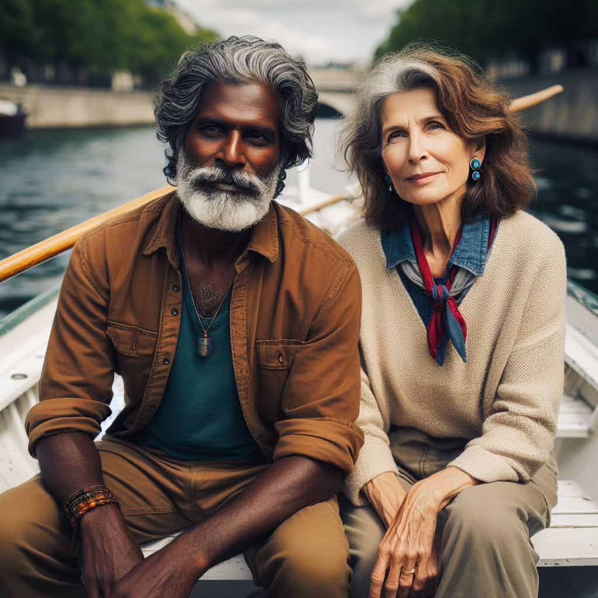